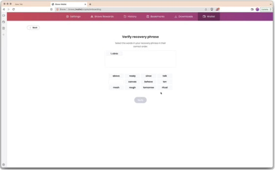
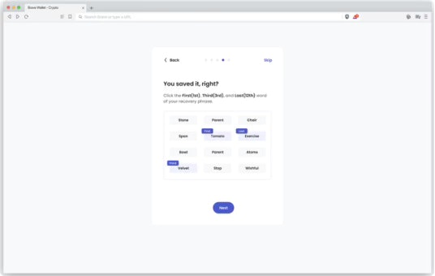
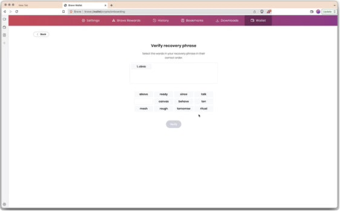
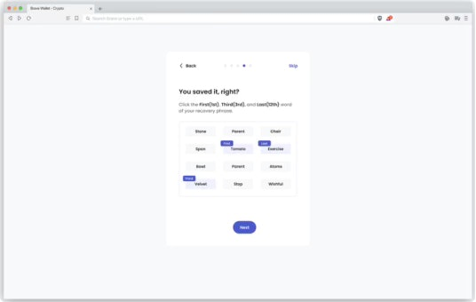
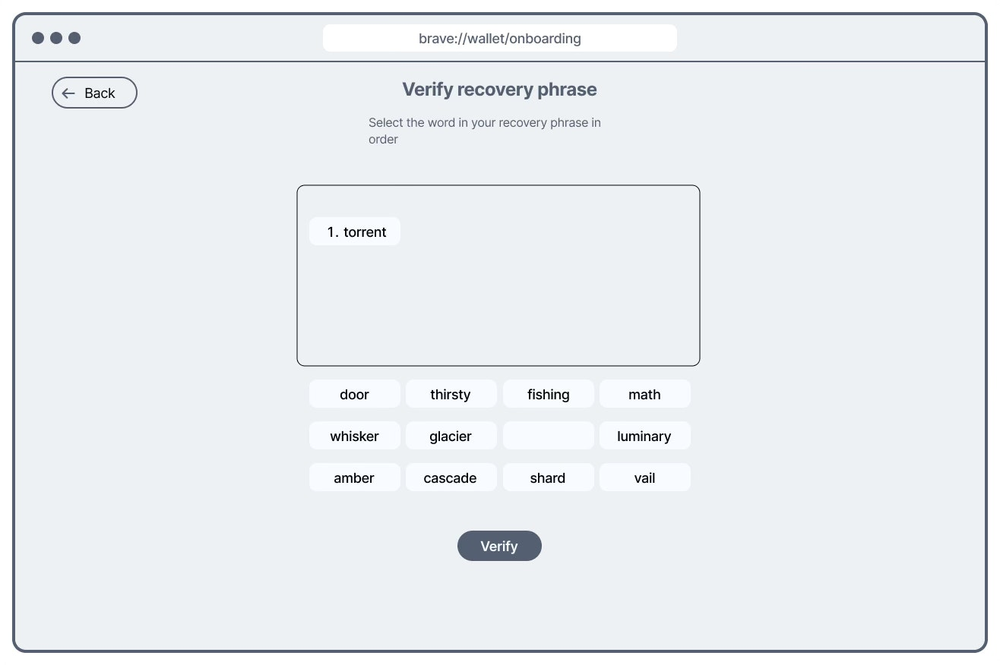
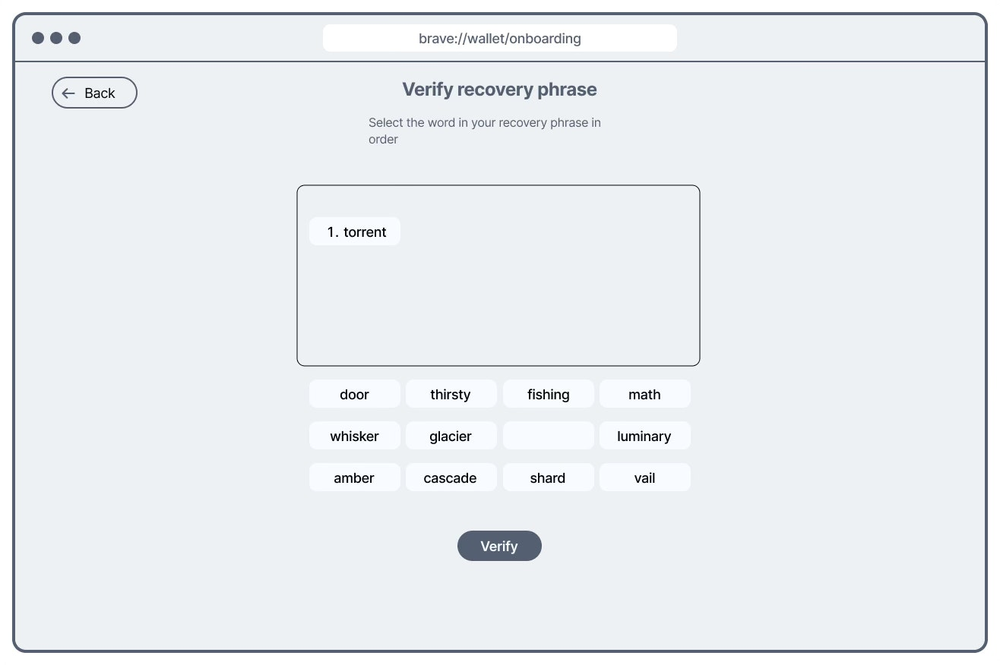

Brave Wallet Onboarding Usability Evaluation Research and Design
BACKGROUND
In 2022, as Brave further developed its crypto browser and Brave Wallet, the design team worked to enhance the wallet onboarding experience. The objective was to ensure new crypto users could easily understand and navigate the onboarding flow. As the UX researcher for this project, I was responsible for evaluating the existing onboarding process and proposing improvements to increase user retention and engagement.
PROBLEM FRAMING
The crypto onboarding experience presented several challenges:
- Steep technical learning curve for users unfamiliar with cryptocurrency concepts
- Complex security requirements that often overwhelmed new users
- Lack of guided support throughout the onboarding flow
RESEARCH OBJECTIVES
- Identify user friction points during onboarding
- Understand users' mental models around crypto wallets
- Uncover opportunities to improve the onboarding process, particularly for crypto novices
RESEARCH METHODS
- Usability Testing (moderated)
- Thinkaloud
- Follow Analysis (to measure changes)
SAMPLING & RECRUITING
To ensure comprehensive insights, we recruited participants with varying levels of crypto experience:
Beginners
- No experience with cryptocurrency
- Interested in learning about crypto
- May have heard of Bitcoin or other cryptocurrencies
Intermediate
- Some familiarity with cryptocurrency concepts
- May have bought crypto on exchanges
- Limited experience with wallets
Advanced
- Active crypto users
- Experience with multiple wallets
- Understand seed phrases, private keys
- May have used DeFi applications
RESEARCH DESIGN
- Pre-test questionnaire to assess crypto knowledge
- Guided task completion through the onboarding process
- Think-aloud protocol during interaction
- Post-task ratings and debriefing
- Retrospective questions about the experience
DATA ANALYSIS
- Success metrics - Completion rates, time on task, error rates (quantitative analysis)
- Sentiment analysis - Verbal expressions of confusion, frustration, or confidence during tasks
- Thematic coding - Identifying common patterns in user feedback and behaviors
KEY INSIGHTS
Crypto terminology is a significant barrier
Beginners struggled with terms like "seed phrase," "private key," and "gas fees" without adequate explanation.
Quote: "I have no idea what a seed phrase is or why I need to write it down."
Security importance needs better contextualization
Users understood they needed to secure their wallet but didn't grasp the consequences of poor security practices.
Quote: "I get that it's important to keep this secret, but I don't understand what would happen if someone got my phrase."
Progressive disclosure is essential
Information overload during onboarding overwhelmed users. They preferred learning concepts as needed.
Quote: "There's too much information at once. I just want to get started and learn as I go."
Clear differentiation from standard accounts is needed
Users frequently compared wallet creation to typical account creation, causing confusion about password recovery options.
Quote: "So if I forget my password, you can't reset it for me? That seems risky."
WIREFRAMES
Based on research findings, I collaborated with designers to create wireframes addressing key pain points:
 





DESIGN CHANGES BASED ON THE KEY INSIGHTS
 


IMPACT
| Metric | Before | After | Change |
|---|---|---|---|
| Onboarding completion rate | 68% | 84% | +16% |
| Time to complete onboarding | 12.4 min | 8.2 min | -34% |
| User satisfaction score | 3.2/5 | 4.5/5 | +40% |
CONSTRAINTS & REFLECTION
Working within a rapidly evolving crypto space presented unique challenges. Our design needed to balance simplification with security requirements that cannot be compromised. In retrospect, we could have incorporated more progressive disclosure elements and created more robust in-app education about cryptocurrency concepts.
FUTURE STUDIES
Following this project, we recommended additional research to explore long-term retention and engagement patterns of new users. Understanding how different onboarding experiences correlate with sustained wallet usage would provide valuable insights for future improvements.